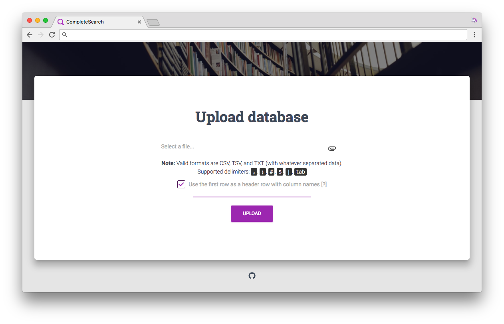
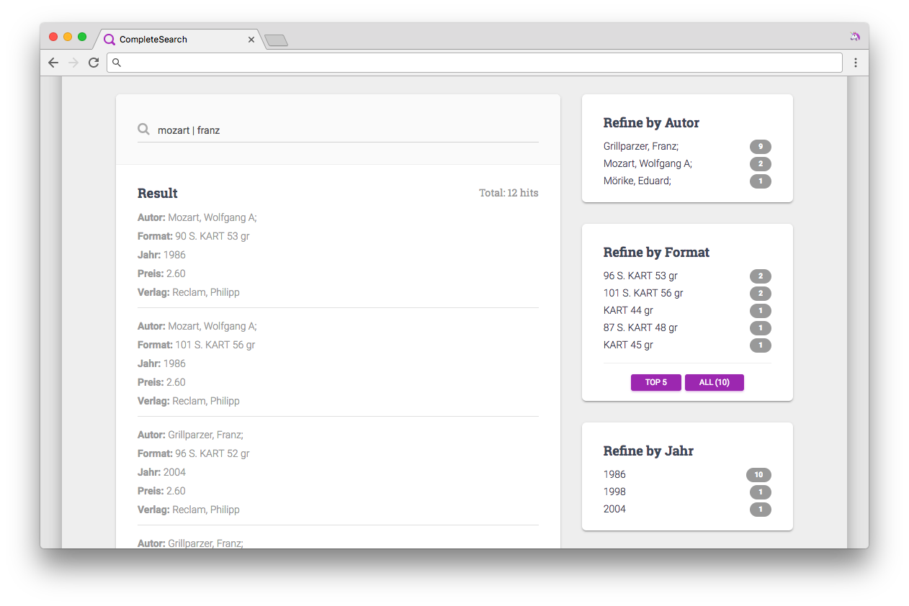
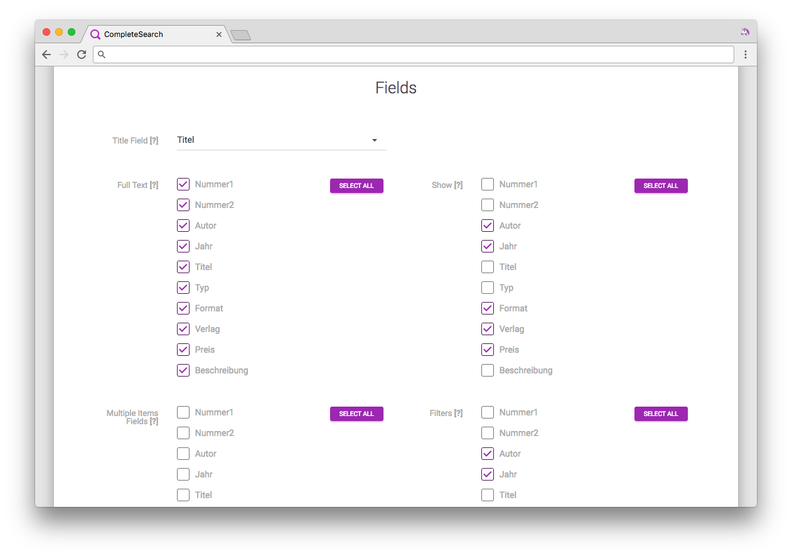

This project is my Master Project at the University of Freiburg.
The main goal was to create an easy-to-use web application, which would take a dataset (CSV, TSV), automatically determine a separator, validate the data (remove rows with a wrong syntax), define search facets, and save the file (pre-processing). Then, use the saved file as an input for the search engine CompleteSearch, which generates indices (post-processing).
CompleteSearch does all the work on performing the search in the uploaded dataset. The web application (this project) serves as a middle layer, which processes and corrects the user input, and sends it to a separate local CompleteSearch server.
Features
- search as you type
- case-insensitive prefix search by default, e.g. sto matches storm as well as STOCK
- exact word search, e.g. graph$ matches graph but not graphics
- phrase search, e.g. deep.learn.neural.netw
- boolean AND, e.g. antonio vivaldi
- boolean OR, e.g. apple | microsoft
- facets: hits with exact field values, e.g. :facet:field_name:field_value
- filters: search for something in a particular field, e.g. :filter:field_name:value
Modules

Upload
The module proceeds as follows:
- check the file format (only CSV, TSV, and TXT are accepted)
- determine a separator from a list of accepted delimiters
- try to load the data into a DataFrame, ignoring lines with errors and comments
- generate a header row (e.g. Column1, Column2, etc.) if the input dataset doesn't have it
- extend the number of columns if it's not equal for every row
- determine facet fields (those fields whose values occur more frequent than others')
- save the filtered dataset
Search
The module handles everything related to a search. It provides the following:
- search query parsing: trim/strip the query, replace multiple whitespaces with a single one, remove all whitespaces around search operators like . and |
- escape special characters
- facets: hits with exact field values, e.g. :facet:field_name:field_value
- filters: search for something in a particular field, e.g. :filter:field_name:value

Settings
The module allows the user to change the dataset configuration,
i.e. search fields, facets and filters, and so on. After saving the
settings, CompleteSearch will regenerate indices and other files.
